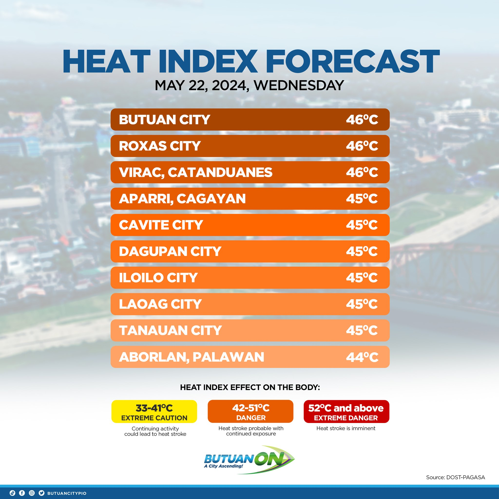

We want to change not only Masao, not only Butuan City, but the Philippines and the world we live in.
Advocate, then Act! (ATA) is an initiative designed to assist Butuan City's Barangay Masao in tackling the consequences of climate change caused by the area's high levels of incorrect waste segregation.
WHY?
Barangay Masao, a coastal barangay located in Butuan City, is a popular destination for tourists and locals wishing to go to the beach. However, because the barangay housed many people, the amount of rubbish dispersed over the area rose. Last September, DPWH-Caraga gathered 22 sacks of rubbish near coastal regions, weighing approximately 1100 kg. (see https://bit.ly/cs3-ref) This waste contributes to Butuan City's soaring temperatures, going up to 40 degrees. (see picture on the right) Climate change has been a big issue in both Masao and across Butuan. Unfortunately, the local population remains unaware of what is going on.
HOW?
I. ADVOCACY PHASE
During the advocacy phase, volunteers and focal persons involved in the cause will conduct an awareness training session .
A series of campaigns will follow, targeting barangay elementary school students, barangay officials, resort owners, and suppliers to persuade them to take action to address the current situation.
I. ACTION PHASE
The action phase will then begin, which will include a variety of activities such as:
- seminar workshops with Masao Elementary School students
- capability training sessions for barangay officials, resort owners, and vendors
- monthly Masao coastal cleanup drives
- plastic waste collection and classification sessions for scientific research
- water quality sampling and laboratory analysis